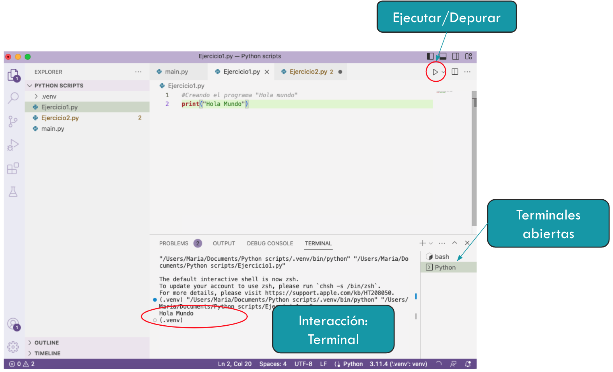
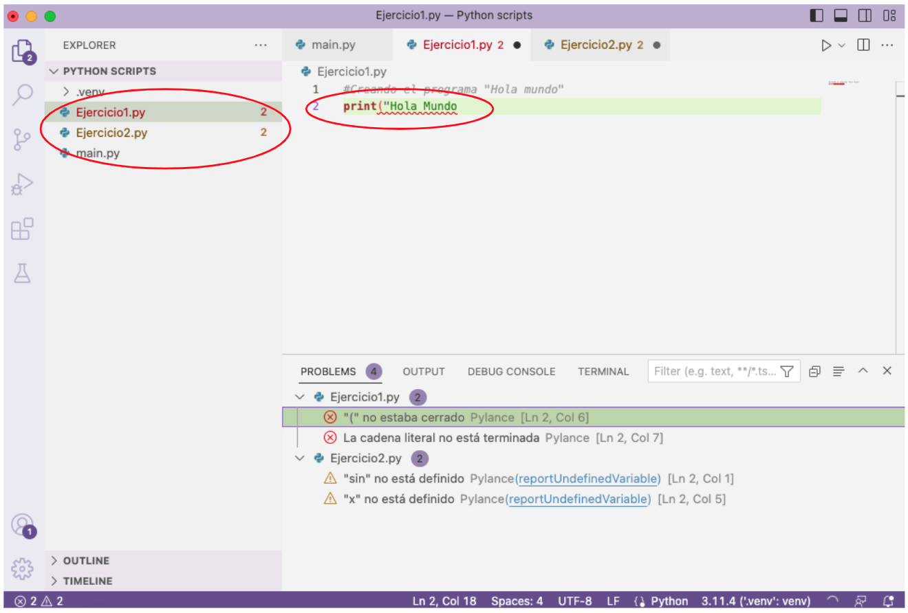
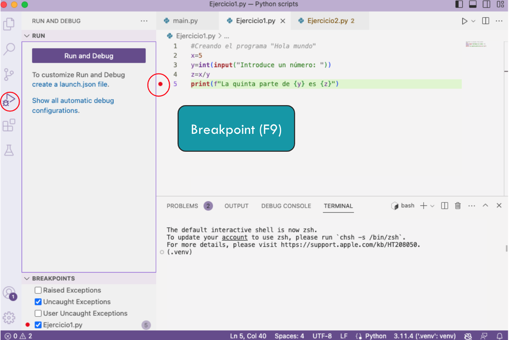
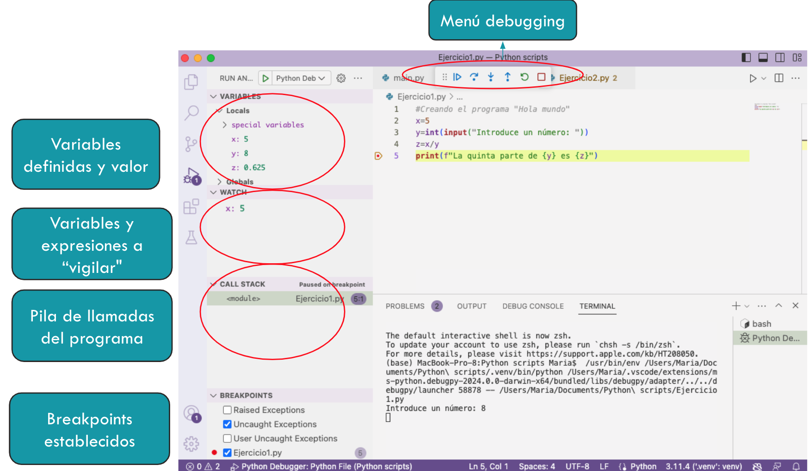

Primeros pasos con VS Code#
Instalación de VS Code y extensiones#
Para instalar VS Code (no confundir con su “hermano mayor” Visual Studio), podemos dirigirnos a su página oficial y descargar el instalador adecuado para nuestro sistema operativo (Windows, macOS o Linux). Una vez descargado, seguimos los pasos del asistente de instalación.
Posteriormente, en VSCode, en el apartado de extensiones (icono de cuadrados en la barra lateral izquierda), buscamos e instalamos la extensión oficial de Python desarrollada por Microsoft. Esta extensión nos proporcionará funcionalidades adicionales como resaltado de sintaxis, autocompletado, depuración, entre otras.
Con todo esto instalado, ya podemos comenzar a programar en Python utilizando VS Code como nuestro entorno de desarrollo integrado (IDE).
Hola Mundo en Python con VS Code#
Una vez que hemos instalado Python y sus componentes, ya podemos empezar a programar. Comenzaremos con un ejercicio muy sencillo, el famoso Hola Mundo. Para ello, creamos un nuevo fichero (con extension .py) en nuestro workspace y escribimos print("Hola mundo"). Recordad utilizar nombres sin espacios ni caracteres especiales para los ficheros fuente.
{kind=link}

Fig. 2 Vista de la interfaz de VS Code mostrando un programa “Hola Mundo”.#
Al ejecutar, podemos ver la salida en la terminal del VSCode. Es ahí donde también introduciremos los datos que solicitaremos al usuario con funciones como input().
{kind=link}

Fig. 3 Vista de la interfaz de VS Code mostrando la terminal y la sección de problemas.#
En PROBLEMS (normalmente en la parte inferior) podemos encontrar varias notificaciones:
Amarillo: warnings, avisos que alertan sobre posibles errores de ejecución o aspectos del código fuente
Rojo: errores. Suelen ser errores de sintaxis o de enlazado de módulos.
En TERMINAL podemos ver la ejecución del programa y la salida del mismo, si la hay. Dependiendo del sistema operativo, puede que tengamos que seleccionar la consola adecuada (PowerShell, CMD Command Prompt, Bash, etc.).
Breve introducción al debugger de VS Code#
Un depurador es una herramienta que nos proporciona un poco más de control en la ejecución de un programa. Entre otras cosas, podemos parar la ejecución, analizar los valores de las variables en determinado momento, las llamadas a funciones, etc.
Nosotros vamos a utilizar el depurador que viene instalado en el VS Code. Para ejecutarlo, podemos utilizar la barra lateral izquierda y dejar la configuración por defecto. Es posible que nos pida crear un fichero launch.json, que es el fichero de configuración del depurador. En ese caso, seleccionamos Python y dejamos la configuración por defecto. Este fichero se crea dentro de una carpeta llamada .vscode en nuestro workspace (carpeta de trabajo) y en otros lenguajes de programación también es utilizado por el depurador.
Si queremos parar la ejecución en un determinado momento, podemos utilizar los breakpoints o puntos de interrupción. Para colocarlos, basta con hacer click (o F9) a la izquierda de la línea en el fichero fuente, justo al lado izquierdo del número de línea.
{kind=link}

Fig. 4 Vista de la interfaz de VS Code mostrando cómo colocar un breakpoint.#
Una vez comenzamos a depurar, nos aparecen varias opciones cuando la ejecución llega al punto de interrupción:
{kind=link}

Fig. 5 Vista de la interfaz de VS Code mostrando las opciones del depurador.#
Menú debugging: Nos permite continuar con la ejecución hasta el siguiente breakpoint (si lo hay), ejecutar solo la siguiente instrucción, entrar dentro de la función en su caso, etc.
Variables definidas: Podemos ver las variables definidas y qué valor contienen en ese momento.
Variables y expresiones a “vigilar”: Podemos añadir aquí las variables o expresiones que deseamos evaluar o realizar un seguimiento. Esto es útil cuando existen muchas variables definidas en un programa.
Pila de llamadas del programa: Aquí se muestran los scripts que están involucrados en la ejecución y sus dependencias.
Breakpoints establecidos: Se mostrarán los puntos de interrupción definidos para la ejecución del programa.
Conclusiones#
Hemos aprendido cómo:
Escribir un “Hola Mundo” en Python.
Cómo ejecutarlo.
Cómo depurarlo.
Ahora podemos comenzar con unas nociones básicas de programación en este lenguaje.